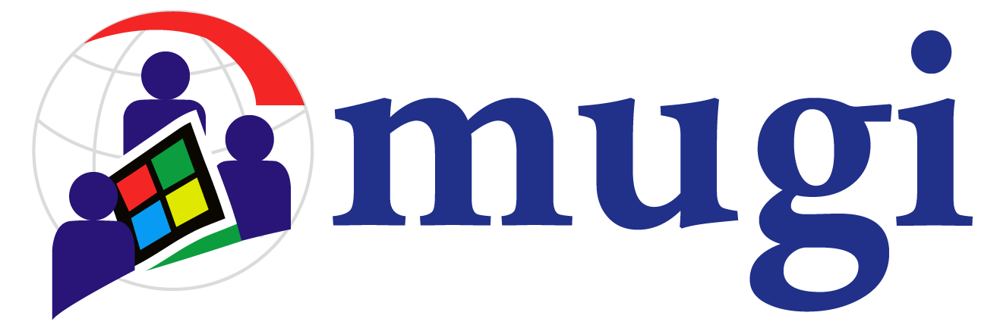
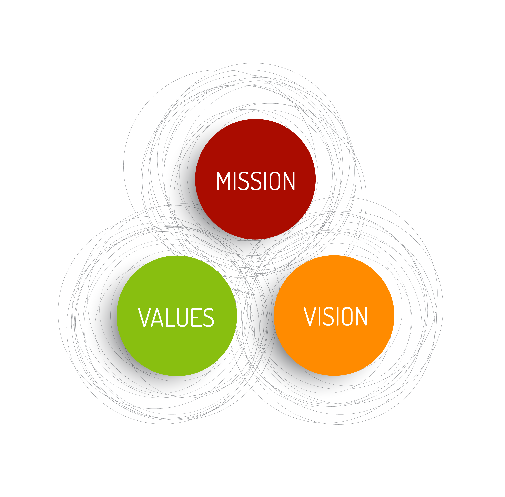

MUGI adalah sebuah komunitas bagi para pengguna, penggemar serta pemerhati produk dan teknologi Microsoft.

Microsoft User Group Indonesia

Visi
Menjadi komunitas teknologi terbesar di Indonesia pada 2025 yang fokus pada teknologi Microsoft.
Misi
Melakukan edukasi teknologi microsoft ke setiap organisasi dan masyarakat
Meningkatkan kerjasama dengan berbagai pihak untuk mendorong pemanfaatan teknologi microsoft
Meningkatkan keahlian, profesionalisme, dan produktivitas anggota komunitas MUGI
Fungsi
PHP Indonesia merupakan organisasi nirlaba yang berfungsi sebagai wadah komunikasi, koordinasi, konsultasi, edukasi dan kerjasama para anggotanya untuk meningkatkan kemampuan, saling pengertian dan rasa tanggung jawab terhadap peningkatan kesejahteraan anggota yang ikut bergabung dalan lembaga ini.
PHP Indonesia berfungsi untuk meningkatkan posisi tawar dan pengakuan pasar untuk meningkatkan kesejahteraan anggota yang tergabung di dalamnya dengan jalan pelaksanaan program peningkatan keahlian, peningkatan profesionalisme, sertifikasi yang diakui oleh pasar dan menumbuhkembangkan semangat kerjasama tim.
PHP Indonesia berfungsi menumbuhkan, mengembangkan dan meningkatkan peran pemrogram PHP dalam industri dan aplikasi telematika dalam kerangka pembangunan bangsa dan negara Indonesia.